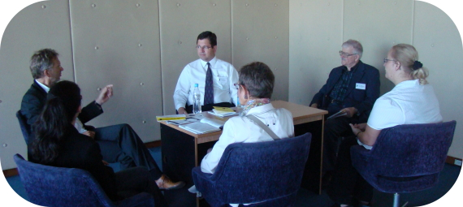

Participant Idea Exchange – Session 1ISSUES IN THE TEACHING OF PSYCHOLOGY IN UNIVERSITY OF ADO-EKITI, NIGERIA TEACHING PSYCHOLOGY IN EUROPE: A NETWORK FOR QUALITY ENHANCEMENT USING WRITING ASSIGNMENTS AND FOLLOW-UP DISCUSSIONS IN TEACHING CULTURAL PSYCHOLOGY POST SECONDARY EDUCATION IS A REALITY! WHERE TO START? WHY PSYCHOLOGY? CLARIFYING THE EXPECTATIONS OF FIRST-YEAR STUDENTS |
© 2008 Victor Karandashev